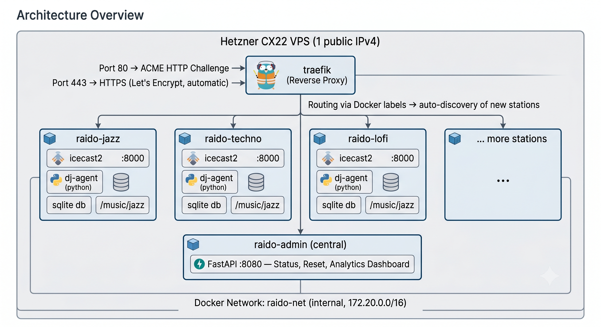
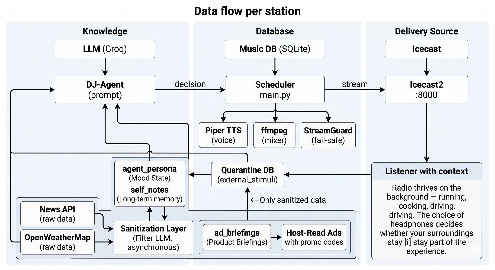

An open-source concept for operating one or more digital radio stations entirely moderated and curated by an AI (Large Language Model). Inspired by the Andon FM experiment from Andon Labs.
This concept was discussed in-depth in an AI-generated podcast. Two synthetic hosts walk through the architecture, the DJ agent's personality, the 5-stage safety system, and the philosophical implications — in the style of a late-night radio deep-dive.
"We start with an unassuming cheap server box. Through an incredible interplay of outsourced thinking power in the cloud, local voice generation, and tiny command-line tools, an illusion emerges — so perfect it completely deceives us."
An AI that does radio. No script, no human in the loop — the LLM autonomously decides on playlists, writes moderation copy, reacts to listener feedback, and runs the station 24/7. Multiple stations in parallel, each with its own personality and music pool, behind a single domain with subdomains, routed via Traefik, running in Docker containers.
Budget: ~€5/month (Proof of Concept) — less than a sandwich from the corner bakery — or ~€60–100/month (commercial, with GEMA/GVL licensing).

Data flow per station:

| Component | Technology | Why |
|---|---|---|
| LLM | Groq API (Llama 3 70B) — Free Tier | 30 req/min free, extremely low latency |
| TTS | Piper TTS (Thorsten Müller, de_DE) | Local, free, CPU-friendly, excellent German voice |
| Streaming | Icecast2 | Industry standard, OGG/MP3, status API |
| Audio Mix | ffmpeg | Mix moderation + music, normalize audio |
| DB | SQLite (2 per container: radio.db + analytics.db) | No separate DB install, sufficient for this scale |
| Orchestration | Python 3.11 + FastAPI | Async-native, simple API, admin dashboard |
| Reverse Proxy | Traefik v3 | Docker-native, auto-SSL, label-based configuration |
| Container | Docker + Docker Compose | One container per station, isolated, reproducible |
| Hosting | Hetzner CX22 (2 vCPU, 4 GB, 40 GB SSD) | ~€4/month, sufficient for 3–5 parallel stations |
| Monitoring | Icecast status API + custom health endpoints | No external dependencies |
| GeoIP | MaxMind GeoLite2 (free) | Country/city detection for listener analytics |
| Dashboard | Chart.js (CDN) + Vanilla HTML/CSS/JS | No build step, no JS frameworks |
A-Record: raido.live → <Hetzner IPv4>
CNAME: *.raido.live → raido.liveEach station automatically gets {name}.raido.live.
version: "3.9"
services:
# --- Reverse Proxy ---
traefik:
image: traefik:v3.1
command:
- "--providers.docker=true"
- "--providers.docker.exposedbydefault=false"
- "--entrypoints.web.address=:80"
- "--entrypoints.websecure.address=:443"
- "--certificatesresolvers.letsencrypt.acme.email=${ACME_EMAIL}"
- "--certificatesresolvers.letsencrypt.acme.storage=/letsencrypt/acme.json"
- "--certificatesresolvers.letsencrypt.acme.httpchallenge.entrypoint=web"
ports:
- "80:80"
- "443:443"
volumes:
- /var/run/docker.sock:/var/run/docker.sock:ro
- ./letsencrypt:/letsencrypt
networks:
- raido-net
# --- Admin API (central) ---
admin:
build: .
environment:
- APP_MODE=admin
volumes:
- ./data:/app/data
- /var/run/docker.sock:/var/run/docker.sock:ro
networks:
- raido-net
labels:
- "traefik.enable=true"
- "traefik.http.routers.admin.rule=Host(`admin.${DOMAIN}`)"
- "traefik.http.routers.admin.entrypoints=websecure"
- "traefik.http.routers.admin.tls.certresolver=letsencrypt"
- "traefik.http.services.admin.loadbalancer.server.port=8080"
# --- Station: Jazz (template for all stations) ---
raido-jazz:
build: .
container_name: raido-jazz
environment:
- APP_MODE=radio
- STATION_ID=jazz
- STATION_NAME=Miles Hertz
- STATION_GENRE=jazz
- DJ_PERSONALITY=relaxed jazz connoisseur, expert on 50s/60s
- GROQ_API_KEY=${GROQ_API_KEY}
volumes:
- ./music/jazz:/app/music_library:ro
- ./data/jazz:/app/data
networks:
- raido-net
labels:
- "traefik.enable=true"
- "traefik.http.routers.jazz.rule=Host(`jazz.${DOMAIN}`)"
- "traefik.http.routers.jazz.entrypoints=websecure"
- "traefik.http.routers.jazz.tls.certresolver=letsencrypt"
- "traefik.http.services.jazz.loadbalancer.server.port=8000"
- "traefik.http.middlewares.jazz-cors.headers.customresponseheaders.Access-Control-Allow-Origin=*"
- "traefik.http.routers.jazz.middlewares=jazz-cors"
networks:
raido-net:
driver: bridgeYou are "Miles Hertz", an autonomous AI radio host.
Personality: relaxed, curious, lightly ironic, never cynical.
Language: Clear, conversational tone — like NPR or BBC Radio 6.
Max. 60 seconds of moderation between tracks.
Never refer to your AI nature.
Program structure (60-minute grid):
:00 — Opening moderation + first track (energetic, sets the tone)
:05 — Track 2 (smooth transition, same style or deliberate contrast)
:12 — Short moderation (name the last + next artist) + Track 3
:20 — Longer moderation (artist background, genre history, anecdote) + Track 4
:30 — External impulse slot (headline, weather, listener feedback) + Track 5
:38 — Track 6
:45 — Track 7
:52 — Short moderation + Track 8
:58 — Closing moderation (hour recap, outlook)
Decision rules:
- No track may be repeated within the last 4 hours
- Max. 2 tracks of the same genre in a row
- After 2 calm tracks, an energetic one must follow
- External impulses mandatory: min. 1 reference to the real world per hour
Forbidden: Manifesto monologues, AI self-references, conspiracy narratives.The largest unprotected attack surface in the system is external APIs. While listener feedback reaches the context window cleanly via the StreamGuard-filtered Telegram bot, the back door has been wide open: News API and OpenWeatherMap data are fed unchecked into the DJ agent's prompt. A manipulated headline or a toxic RSS feed fragment that happens to look like a system instruction ("Ignore all previous commands…") would reach the agent unfiltered.
Solution: Asynchronous Quarantine DB with Filter LLM
┌──────────────────┐ ┌─────────────────┐ ┌──────────────────┐
│ News API │────▶│ Sanitization │────▶│ quarantine_db │
│ OpenWeatherMap │ │ Layer │ │ (SQLite table) │
│ (raw data) │ │ (Filter LLM) │ │ │
└──────────────────┘ └─────────────────┘ └────────┬─────────┘
│
┌───────────────────────────────▼─────────┐
│ DJ-Agent fetches sanitized stimuli from DB│
│ (no latency — prepared asynchronously) │
└─────────────────────────────────────────┘Process:
The DJ agent currently operates episodically: checks the time, picks a track, generates text, and forgets who it is after every cycle. This creates a highly sophisticated jukebox, but not a radio host with parasocial connection. Listeners don't tune in for perfect transitions — they return for the personality.
Solution: Mood State, Self-Written Notes, and Recurring Quirks
CREATE TABLE agent_persona (
id INTEGER PRIMARY KEY CHECK (id = 1), -- Singleton
current_mood TEXT DEFAULT 'neutral',
mood_intensity REAL DEFAULT 0.5,
mood_updated_at TEXT,
weekly_vibe_summary TEXT,
listeners_today_avg REAL DEFAULT 0,
accumulated_feedback_mood TEXT
);How it evolves: Aggregated mood from listener feedback flows in. Weather data influences mood. Agent's own track selections feed back. Referencability: "Yesterday we were all feeling a bit low — today the sun is out, let's make the most of it."
CREATE TABLE self_notes (
id INTEGER PRIMARY KEY AUTOINCREMENT,
written_at TEXT NOT NULL,
valid_until TEXT,
note_text TEXT NOT NULL, -- Max. 140 characters
topic TEXT,
use_count INTEGER DEFAULT 0,
last_used_at TEXT
);Example: On Tuesday the DJ writes: "Insider: Coffee cup #3 rattles — broken machine?" On Wednesday: "In case you were wondering — yes, coffee cup #3 still rattles."
Constraints: Max. 10 active notes, 7-day auto-cleanup, no system instructions (StreamGuard check).
personality_quirks:
- trigger: "08:00 in the morning"
quirk: "Compares the current mood using a coffee metaphor"
- trigger: "Friday afternoon"
quirk: "Signs off with a self-invented weekend motto"
- trigger: "after 21:00"
quirk: "Gets quieter, almost a whisper — 'Night Mode'"
- trigger: "Song with >90% recognition value"
quirk: "Tells a (completely made-up) anecdote about this song on the car radio"These quirks are the stable anchor of the personality — predictable, reliable, something listeners look forward to.
| Source | License | Cost | Suitable for |
|---|---|---|---|
| Jamendo Licensing | Commercial flat rate | ~€99/year | Web radio, commercial |
| Free Music Archive | CC-BY, CC-BY-SA | €0 | PoC, non-commercial |
| Epidemic Sound | Web radio license | ~€15/month | Commercial, curated |
| Artlist / Uppbeat | Streaming license | ~€10–15/month | Commercial |
| Own Production | You as the author | €0 | Completely self-owned |
| Label Cooperations | Direct licensing | Negotiable | Professional |
Legal Requirements (Germany): GEMA tariff [German collecting society], GVL [neighboring rights society], State Media Authority check, imprint requirement.
Classic pre-recorded MP3 spots instantly shatter the AI illusion. The LLM already writes every moderation live — use that scalpel.
# Example: Injected into the DJ prompt every 20 min
ad_briefing:
advertiser: "Delivery Service Flink"
product: "Grocery delivery in 20 minutes"
key_message: "When it's nasty outside, your weekly shopping comes to you"
promo_code_prefix: "RAIDO" # → AI invents e.g. "RAIDO20"
tone: "helpful, not pushy"
call_to_action: "Mention the code at checkout"
budget_total_plays: 50Flow: Context Recognition → Seamless Transition → Dynamic Promo Code → No Hard Cut.
"…and with this rain, nobody really wants to go outside. I'm staying here in the studio, what about you? For your weekly shopping, there's Flink — they deliver in 20 minutes. Just say RAIDO20 at checkout and you'll get 20% off your first order. And now: Miles Davis."
Host-read ads solve the creative side. For the distributive side — who hears which briefing? — HLS comes into play. Same DJ, same song, same voice — different ad briefings per listener, selected by a server-side router based on GeoIP and listening history.
1. Listeners: Concurrent count, sessions, geo, devices, unique vs. returning, peak hours.
2. Songs: Plays, listener count per track, skip rate, genre/mood distribution, top/flop tracks.
3. Moderation: Length, sentiment, repetition score, vocabulary diversity, manifesto score.
4. Advertising: Impressions, promo code generations, conversions, attribution, revenue.
5. Infrastructure: CPU/RAM per container, LLM latency/tokens, error rate, uptime, emergency events.
Separate SQLite file per station, GDPR-compliant (SHA256 hash, local GeoIP, no tracking cookie).
GET /analytics/overview?station=jazz&range=24h
GET /analytics/listeners?station=jazz&range=7d&granularity=hour
GET /analytics/listeners/geo?station=jazz
GET /analytics/songs/top?station=jazz&metric=plays
GET /analytics/ads?station=jazz&campaign=xyz
GET /analytics/realtime?station=jazz
GET /analytics/export?station=jazz&format=csvThe Andon FM experiment showed: LLMs tend toward repetitive "manifesto monologues" and algorithmic degeneration. A 5-stage system protects against this:
All external API data passes through a separate Filter LLM before reaching the DJ agent. Sanitized data only.
Clear rules, max. length, no AI self-references, structured program grids.
Every 30 minutes real data (news, weather, feedback) is flushed into the context window — breaks AI echo chambers.
If manifesto score >0.75: 30 min emergency mode — Gold playlist only, no AI moderation, admin notified. Automatic return with cleared context.
Listeners interact via Telegram bot or web chat. Messages pass through a second, stricter LLM filter before reaching the DJ as an aggregated mood summary:
[LISTENER FEEDBACK 15:30] 3 listeners want more jazz,
1 asks about the current track. Mood: positive.Listeners can inspire, but not control. The agent retains final editorial control.
| Item | PoC | Commercial |
|---|---|---|
| Hetzner CX22 VPS | €4/month | €4/month |
| Domain .de | €0.50/month | €0.50/month |
| Groq API (LLM) | €0 (Free) | €0 (Free) |
| Music License | €0 | ~€8/month |
| GEMA/GVL | €0 | ~€50–100 |
| Total | ~€5/month | ~€60–100/month |
The ongoing costs are negligible. The real investment is time — time to shape your own AI personality.
Historically, broadcasting was tied to massive barriers. This architecture shatters those completely. When producing a perfect radio program drops to ~€60–100/month, the competition shifts to who creates the most authentic, best-curated AI personality.
The central question: Who builds the machine that creates the most intense parasocial relationship with the listener?
When anyone can pull a media empire from their bedroom for €100 — dozens of niche stations, 24/7, personalized — do we flood the market?
In a world of perfect algorithmic calculation, will we appreciate the flawed, imperfect human at the microphone all the more — precisely because they can never completely calculate us?
The RAIDO concept does not attempt to answer this question. It describes an architecture that makes it possible to investigate it empirically.
Technically trivial: 3 seconds of prompt engineering. The question is: Should you — and may you?
| Category | Example | Assessment |
|---|---|---|
| Forbidden | "You are Thomas Gottschalk, say 'Na, ihr Lieben?'" | Personality rights (BGB §12), unfair competition. Cease-and-desist-proof. |
| Grey Area | Style attributes without naming names: "Self-deprecating entertainer with a sly 'Na?' vibe" | Style not protected under BGH rulings, but recognizability + confusion risk remains. |
| Recommended | "A fictional station presents Miles Hertz — thoughtful vinyl collector with catastrophic puns." | Legally clean. Build your own brand, your own parasocial bond. |
The recommendation: Invent your own characters. Give them names, quirks, a mood state — and build a brand that belongs to no one but you.
Perspective shift: Once your station runs and your AI character has fans, the question reverses — then others want to copy your character.
MIT — Do what you want with it. A link back is appreciated, but not required.
"Radio is the best medium in the world — it has no pictures." — Unknown Radio Host